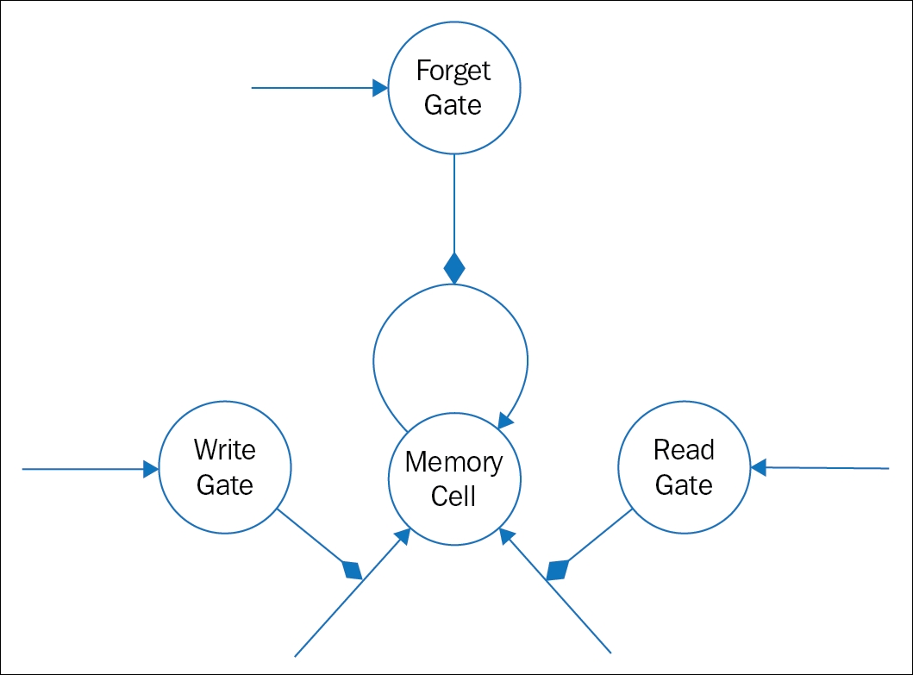
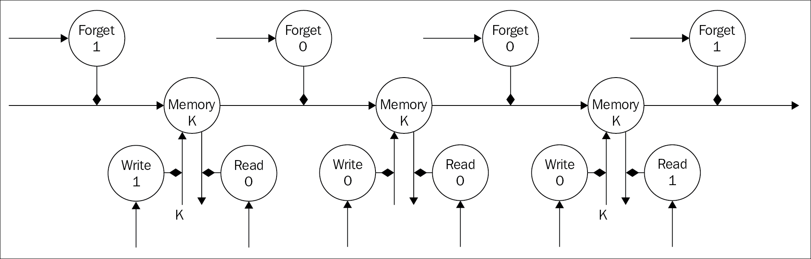

In this section, we will discuss a special unit called Long short-term memory (LSTM), which is integrated into RNN. The main purpose of LSTM is to prevent a significant problem of RNN, called the vanishing gradient problem.
Unlike the traditional feed forward network, due to unrolling of a RNN with narrow time steps, the feed forward network generated this way could be aggressively deep. This sometimes makes it extremely difficult to train via backpropagation through the time procedure.
In the first chapter, we discussed the vanishing gradient problem. An unfolded RNN suffers from the vanishing gradient problem of exploding while performing backpropagation through time.
Every state of a RNN depends on its input and its previous output multiplied by the current hidden state vector. The same operations happen to the gradient in the reverse direction during backpropagation through time. The layers and numerous time steps of the unfolded RNN relate to each other through multiplication, hence the derivatives are susceptible to vanish with every pass.
On the other hand, a small gradient tends to get smaller, while a large gradient gets even larger while passing through every time step. This creates the vanishing or exploding gradient problem respectively for a RNN.
In the mid-90s, an updated version of RNNs with a special unit, called Long short-term memory (LSTM) units, was proposed by German researchers Sepp Hochreiter and Juergen Schmidhuber [116] to protect against the exploding or vanishing gradient problem.
LSTM helps to maintain a constant error, which can be propagated though time and through each layer of the network. This preservation of constant error allows the unrolled recurrent networks to learn on an aggressively deep network, even unrolled by a thousand time steps. This eventually opens a channel to link the causes of effects remotely.
The architecture of LSTM maintains a constant error flow through the internal state of special memory units. The following figure (Figure 4.6) shows a basic block diagram of a LSTM for easy understanding:

Figure 4.6: The figure shows a basic model of the Long-short term memorys
As shown in the preceding figure, an LSTM unit is composed of a memory cell that primarily stores information for long periods of time. Three specialized gate neurons-- write gate, read gate, and forget gate-protect the access to this memory cell. Unlike the digital storage of computers, the gates are analog in nature, with a range of 0 to 1. Analog devices have an added advantage over digital ones, as they are differentiable, and hence, serve the purpose for the backpropagation method. The gate cell of LSTM, instead of forwarding the information as inputs to the next neurons, sets the associated weights connecting the rest of the neural network to the memory cell. The memory cell is, basically, a self-connected linear neuron. When the forget cell is reset (turned 0), the memory cell writes its content to itself and remembers the last content of the memory. For a memory write operation though, the forget gate and write get should be set (turned 1). Also, when the forget gate outputs something close to 1, the memory cell effectively forgets all the previous contents that it had stored. Now, when the write gate is set, it allows any information to write into its memory cell. Similarly, when the read gate outputs a 1, it will allow the rest of the network to read from its memory cell.
As explained earlier, the problem with computing the gradient descent for traditional RNNs is that the error gradient vanishes rapidly while propagating through the time steps in the unfolded network. Adding an LSTM unit, the error values when backpropagated from the output are collected in the memory cell of the LSTM units. This phenomenon is also known as error carousel. We will use the following example to describe how LSTM overcomes the vanishing gradient problem for RNNs:

Figure 4.7: The figure shows a Long-short term memory unfolded in time. It also depicts how the content of the memory cell is protected with the help of three gates.
Figure 4.7 shows a Long short-term memory unit unrolled through time. We will start with initializing the value of the forget gate to 1 and write gate to 1. As shown in the preceding figure, this will write an information K into the memory cell. After writing, this value is retained in the memory cell by setting the value of the forget gate to 0. We then set the value of the read gate as 1, which reads and outputs the value K from the memory cell. From the point of loading K into the memory cell to the point of reading the same from the memory cell backpropagation through time is followed.
The error derivatives received from the read point backpropagate through the network with some nominal changes, until the write point. This happens because of the linear nature of the memory neuron. Thus, with this operation, we can maintain the error derivatives over hundreds of steps without going into the trap of the vanishing gradient problems.
So there are many reasons for why Long short-term memory outperforms standard RNNs. LSTM was able to achieve the best known result in unsegmented connected handwriting recognition [117]; also, it is equally successfully applied to automated speech recognition. As of now, the major technological companies such as Apple, Microsoft, Google, Baidu, and so on have started to widely use LSTM networks as a primary component for their latest products [118].